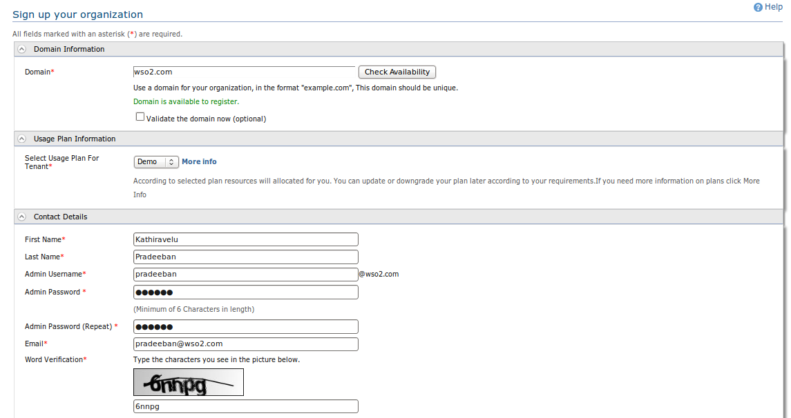

You can use this form to register an account for the domain of your organization. You can also check whether the domain is available to register here.
Optionally you can choose to validate the domain, or can go ahead registering without validating the domain for the moment.

You need to provide the following information to register your organization.
| The Form Field | Description |
| Domain | Enter the domain name of your organization in here. |
| Admin Username | The username of the first admin account for your organization. You can use this account to login to all WSO2 Stratos services under your domain name. There is a user management UI that you can access after you login to the system where you can add new users (including users under admin role), new roles. |
| First Name | Your first name, which will be used to address you in the further communication and the notifications. |
| Last Name | Your last name. |
| Admin Password | The password of the startup admin account. You can change the password later from the user management UI. |
| Admin Password (Repeat) | Repeat the password you provided in the above field, so we can catch any typing mistake you made in there. |
| Your email address. This email will be used to complete the registration process and to contact you for any further requirement. | |
| Word Verification | Enter the letters shown in the above image in this text box. |
Once you completed the registration, you will be sent an email notification with the account verification information.
After verifying your registration, you can log in to the account using the log in page.